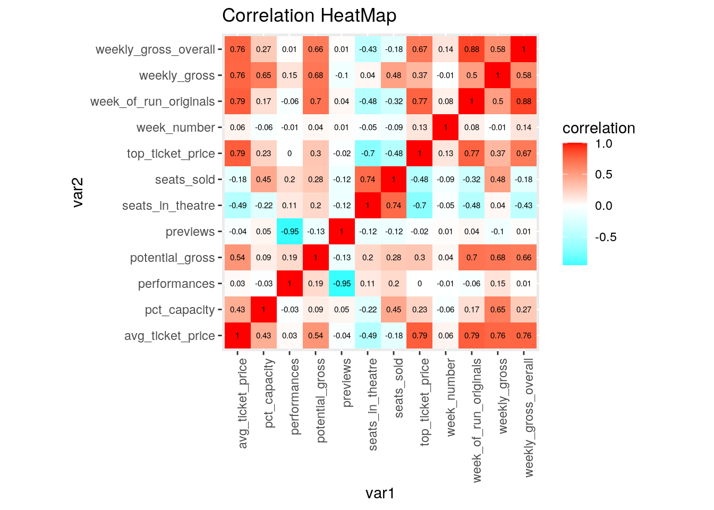
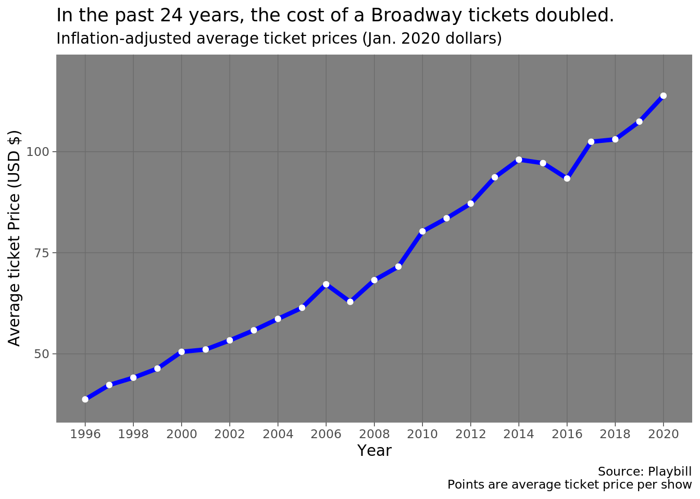
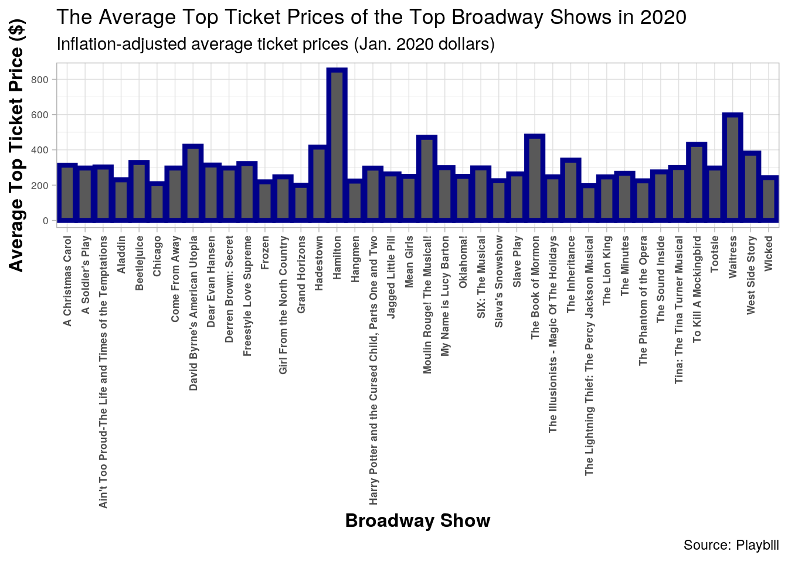
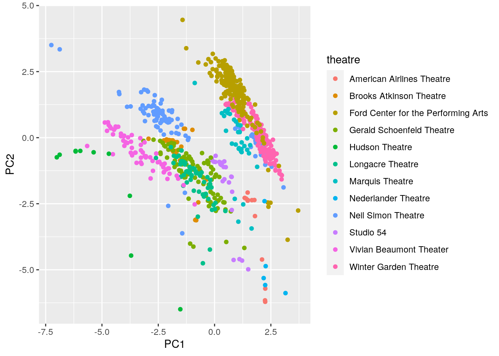

Broadway Data Analysis Project by: Ericka Salas (efs554)
Before the COVID-19 pandemic hit, I worked at a box office on UT Austin's campus that mainly sold tickets to concerts and broadway performances. I became a huge broadway fan and for the past two years of working in the office, attending broadway musicals has always been fun and exciting. I miss the feeling of the lights dimming at the beginning of a show or intermission conversations on the songs I enjoyed the most. Since I miss watching broadway musicals, I decided to analyze the different successes of different broadway shows from 19.
The data I gathered is from Github's "Tidy Tuesday" which specifically comes from Playbill, an offical broadway magazine and website. This data shows weekly box office grosses of revenue, attendance in different Broadway League theaters, weekly dates, average ticket price, potential gross, preview numbers, number of performances, etc. There is a total of fifteen numberic variable and two categorical variables. I am looking at two different datasets. One is composed of all the weekly grosses for each show while the other is composed of shows that started before 1985. I am mainly curious on what are the most successful broadway shows of all time. Also, I want to analyze if ticket prices have changed since the premiere of each show. Overall, I expect popular broadway shows like Hamilton, Cats, and The Lion King to have the most revenue or performance attendance.
library(tidyverse)
library(dplyr)
# importing this library to easily convert a date to a year
# by itself
library(lubridate)grosses <- readr::read_csv("https://raw.githubusercontent.com/rfordatascience/tidytuesday/master/data/2020/2020-04-28/grosses.csv",
guess_max = 40000)pre_1985_starts <- readr::read_csv("https://raw.githubusercontent.com/rfordatascience/tidytuesday/master/data/2020/2020-04-28/pre-1985-starts.csv")These datasets are already tidy, however, I untidyed it and gathered it back together to demonstrate how the variables were spread out before. First I piped the data set to spread out the theater location variables with values from the week each performance stopped premiering. Subsequently, to tidy it back together, I gathered all the columns that were theater names and placed them in a column called theater along with its weekend final premier date.
grosses <- grosses %>% pivot_wider(names_from = theatre, values_from = week_ending) %>%
pivot_longer(cols = "St. James Theatre":"Helen Hayes Theater",
names_to = "theatre", values_to = "week_ending")
head(grosses)## # A tibble: 6 x 14
## week_number weekly_gross_ov… show weekly_gross potential_gross
## <dbl> <dbl> <chr> <dbl> <dbl>
## 1 1 3915937 42nd… 282368 NA
## 2 1 3915937 42nd… 282368 NA
## 3 1 3915937 42nd… 282368 NA
## 4 1 3915937 42nd… 282368 NA
## 5 1 3915937 42nd… 282368 NA
## 6 1 3915937 42nd… 282368 NA
## # … with 9 more variables: avg_ticket_price <dbl>, top_ticket_price <dbl>,
## # seats_sold <dbl>, seats_in_theatre <dbl>, pct_capacity <dbl>,
## # performances <dbl>, previews <dbl>, theatre <chr>, week_ending <date>I decided to do a left join since the common variable between the datasets is "show". The majority of the show data is in the grosses variable, which is the main focus of the data. Therefore, the left join omits the unneccessary variables that are present in the "pre_1985_starts" datasets and joins the shows in both. The cases that were dropped were the shows not present in the overall gross dataset. In other words, a few shows that premiered prior to 1985 and were not present in the gross dataset were dropped.
broadway <- left_join(grosses, pre_1985_starts, by = "show")# selecting avg_ticket_price, show, theatre, then arranging
# the ticket prices by most expensive ticket price in theatre
highest_price <- broadway %>% group_by(show) %>% filter(theatre ==
"Majestic Theatre") %>% select(avg_ticket_price, show) %>%
arrange(desc(avg_ticket_price))
head(highest_price)## # A tibble: 6 x 2
## # Groups: show [1]
## avg_ticket_price show
## <dbl> <chr>
## 1 512. Springsteen On Broadway
## 2 511. Springsteen On Broadway
## 3 511. Springsteen On Broadway
## 4 510. Springsteen On Broadway
## 5 510. Springsteen On Broadway
## 6 510. Springsteen On Broadwaycalculate_weeks_since_start <- function(x) {
as.integer(pmax(1, difftime("1985-06-09", x, units = "weeks")))
}
broadway <- broadway %>% mutate(week_of_run_originals = calculate_weeks_since_start(start_date) +
row_number())broadway %>% group_by(show) %>% summarize(count = n()) %>% arrange(desc(count)) %>%
head## # A tibble: 6 x 2
## show count
## <chr> <int>
## 1 The Phantom of the Opera 97266
## 2 Chicago 70644
## 3 The Lion King 67628
## 4 Les Miserables 60320
## 5 Cats 50692
## 6 Wicked 49590broadway %>% summarize(mean_original_week = mean(week_of_run_originals,
na.rm = T))## # A tibble: 1 x 1
## mean_original_week
## <dbl>
## 1 582717.top_tickets <- grosses %>% mutate(year = year(week_ending)) %>%
filter(year >= 1996, !is.na(top_ticket_price)) %>% group_by(year,
show) %>% summarise(avg_ticket_price = mean(avg_ticket_price,
na.rm = TRUE), avg_top_ticket_price = mean(top_ticket_price,
na.rm = TRUE)) %>% arrange(desc(avg_top_ticket_price))
top_tickets %>% head## # A tibble: 6 x 4
## # Groups: year [4]
## year show avg_ticket_price avg_top_ticket_price
## <dbl> <chr> <dbl> <dbl>
## 1 2019 Hamilton 285. 857.
## 2 2020 Hamilton 256. 852.
## 3 2018 Hamilton 291. 849
## 4 2017 Hamilton 277. 829.
## 5 2017 Hello, Dolly! 188. 773.
## 6 2019 Dave Chappelle Live on Broadway 212. 748broadway %>% group_by(show) %>% summarize(mean_show_seats_sold = mean(seats_sold,
na.rm = T), sd_show_seats_sold = sd(seats_sold, na.rm = T)) %>%
arrange(desc(mean_show_seats_sold)) %>% head## # A tibble: 6 x 3
## show mean_show_seats_sold sd_show_seats_so…
## <chr> <dbl> <dbl>
## 1 David Copperfield: Dreams and Nightmar… 20043. 1177.
## 2 Dr. Seuss' How the Grinch Stole Christ… 15376. 5695.
## 3 Wicked 14233. 1125.
## 4 Aladdin 13543. 668.
## 5 The Lion King 13449. 1210.
## 6 Show Boat 13210. 1636.broadway %>% group_by(theatre) %>% summarize(mean_theatre_seats_sold = mean(seats_sold,
na.rm = T), sd_theatre_seats_sold = sd(seats_sold, na.rm = T)) %>%
head## # A tibble: 6 x 3
## theatre mean_theatre_seats_sold sd_theatre_seats_sold
## <chr> <dbl> <dbl>
## 1 46th Street Theatre 7893. 3186.
## 2 Al Hirschfeld Theatre 7893. 3186.
## 3 Ambassador Theatre 7893. 3186.
## 4 American Airlines Theatre 7893. 3186.
## 5 August Wilson Theatre 7893. 3186.
## 6 Belasco Theatre 7893. 3186.broadway %>% filter(show == "Cats") %>% summarize(med_cats_price = median(avg_ticket_price,
na.rm = T), min_cats_price = min(avg_ticket_price, na.rm = T),
max_cats_price = max(avg_ticket_price, na.rm = T))## # A tibble: 1 x 3
## med_cats_price min_cats_price max_cats_price
## <dbl> <dbl> <dbl>
## 1 42.9 35.6 147.After summarizing different variables and grouping them by categoricals, the results of the Broadway shows and theatres appeared to be interesting. The Broadway performance with the highest average ticket price of all time in the Majestic Theatre is Springsteen on Broadway with a price of 511.58 US dollars. The Phantom of the Opera appeared to be the show with the most number of performances with a total of 97266 premieres. The mean number of weeks that have passed since a show has premiered is 582716.9, which means that many of the shows in this data are successful and continue to premiere. Hamilton appeared to be the top show for five years straight, from 2016 to 2020. In addition, the Broadway show that had the most attendance and seats sold ever in a single theater was David Copperfield: Dreams and Nightmares, which had a value of 20043 seat sold. On average, all the Broadway League theatre sold approximately 7893 seats per show.
Since Cats is one of the most classic and popular Broadway shows, I decided to retrieve the median, minimum, and max average price of tickets. The median ticket price is $42.89 and the minimum is 35.59. On average, the maximum ticket price of Cats is 147.17, which means that this performance is less costly than other shows such as Hamilton.
# Getting only the numeric values
cormat <- broadway %>% na.omit() %>% select_if(is.numeric) %>%
cor(use = "pair")
# Making the correlation matrix tidy
tidycor <- cormat %>% as.data.frame %>% rownames_to_column("var1") %>%
pivot_longer(-1, names_to = "var2", values_to = "correlation")
# Creating the correlation heatmap
tidycor %>% ggplot(aes(var1, var2, fill = correlation)) + geom_tile() +
scale_fill_gradient2(low = "cyan", mid = "white", high = "red") +
geom_text(aes(label = round(correlation, 2)), color = "black",
size = 2) + theme(axis.text.x = element_text(angle = 90,
hjust = 1)) + coord_fixed() + labs(title = "Correlation HeatMap")
# mapping the three variables
broadway %>% ggplot(aes(year, avg_ticket_price, color = theatre)) +
geom_line(data = top_tickets, size = 1.5, col = "blue", stat = "Summary") +
geom_point(data = top_tickets, size = 1.5, col = "white",
stat = "Summary") + theme_dark() + # fixing the labels here (x, y, title)
scale_x_continuous("Year", breaks = seq(1984, 2020, 2)) + scale_y_continuous("Average ticket Price (USD $)") +
labs(title = "In the past 24 years, the cost of a Broadway tickets doubled.",
subtitle = "Inflation-adjusted average ticket prices (Jan. 2020 dollars)",
caption = paste("Source: Playbill", "Points are average ticket price per show",
sep = "\n"), x = "", y = "") + # adding a new theme outside the ones incorporated
theme(text = element_text(family = "Bahnschrift"), panel.grid.minor = element_blank())
# subsetting a dataframe to be the top tickets of only 2020
top_2020 <- top_tickets %>% filter(year == 2020)
# mapping three diff variables
top_2020 %>% ggplot(aes(x = show, y = avg_top_ticket_price, color = as.factor(theatre))) +
# adding a theme and setting the x, y, and title labs
theme_light() + geom_bar(data = top_2020, size = 1.5, col = "dark blue",
stat = "Summary") + labs(title = "The Average Top Ticket Prices of the Top Broadway Shows in 2020",
subtitle = "Inflation-adjusted average ticket prices (Jan. 2020 dollars)",
caption = paste("Source: Playbill")) + ylab("Average Top Ticket Price ($)") +
xlab("Broadway Show") + theme(axis.text = element_text(size = 6.5),
axis.title = element_text(size = 12, face = "bold")) + theme(axis.text.x = element_text(angle = 90,
vjust = 0.5, hjust = 1, face = "bold")) The first plot shows that the average ticket price per broadway show has increased in the past 24 years. In 1996, the average price per ticket was less than 50 dollars. The price increased per year, conveying a positive correlation between year and average ticket price. In 2020, the average ticket price increased to above 100 US dollars. There are a few shows that bring the 2020 prices higher since they are in demand such as Hamilton, Dear Evan Hansen, etc.
The second plot shows the top ticket prices of 2020 before the COVID-19 pandemic. Therefore, this data is not a full year, but the 2020 season from December to late March. This is a reason why A Christmas Carol made onto this plot since it was mainly performed during the holiday season. The show with the highest ticket price is Hamilton, which approximately reaches as high as 1,000 USD. Waitress appears to be the second highest with a max of around 600 USD. The rest of the shows appear to be the same due to the uniform distribution of the plot. The majority of shows had a high price that reach up to 400 USD. This plot shows that these broadway performance were the most paid for and had the most purchased tickets with the above price ranges.
The chosen numeric variables
pre_1985_starts <- readr::read_csv("https://raw.githubusercontent.com/rfordatascience/tidytuesday/master/data/2020/2020-04-28/pre-1985-starts.csv")
grosses <- readr::read_csv("https://raw.githubusercontent.com/rfordatascience/tidytuesday/master/data/2020/2020-04-28/grosses.csv",
guess_max = 40000)
broadway <- left_join(grosses, pre_1985_starts, by = "show")
broadway <- broadway %>% na.omit()broadway1 <- broadway %>% select(-show, -theatre)
nums <- broadway1 %>% select_if(is.numeric) %>% scale
rownames(nums) <- broadway1$show
broad_pca <- princomp(nums)
datScale <- broadway %>% select(is.numeric) %>% scale
eig1 <- broadway %>% select(is.numeric) %>% cor() %>% eigen()
PCAscores <- datScale %*% eig1$vectorseigval <- broad_pca$sdev^2 #square to convert SDs to eigenvalues
varprop = round(eigval/sum(eigval), 2) #proportion of var explained by each PC# using cumulative property of variance
round(cumsum(eigval)/sum(eigval), 2)## Comp.1 Comp.2 Comp.3 Comp.4 Comp.5 Comp.6 Comp.7 Comp.8 Comp.9 Comp.10
## 0.35 0.59 0.76 0.86 0.94 0.97 0.98 0.99 1.00 1.00
## Comp.11
## 1.00Therefore, 2 or 3 PC's are most ideal
broadway %>% mutate(PC1 = PCAscores[, 1], PC2 = PCAscores[, 2],
PC3 = PCAscores[, 3]) %>% ggplot(aes(PC1, PC2, color = theatre)) +
geom_point()
Since we want to know what direction the data varies the most, a Principle Component Analysis. First a correlation matrix was created by scaling the data and retrieving only the numeric variables. Three PC numbers were kept after doing a cumulative proportion of variance. Based on the PCA score plot above, the two theatres that are most clearly separate by PC2 are Ford Center for the Performing Arts and Longacre Theater. In additon, Vivian Beaumont Theater, Gerald Scholenfeld Theatre, and Ford Center for Performing Arts are clearly separate by PC1. There are a few outliers in the clusters, but they are mainly from the Hudson Theatre.